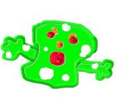
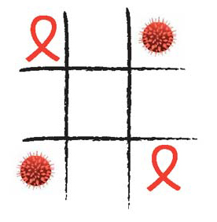

SIDA
 De: La Frikipedia, la enciclopedia extremadamente seria.
De: La Frikipedia, la enciclopedia extremadamente seria.
| De la serie enfermedades y padecimientos:
|
| SIDA
|
| 
|
| Virus del sida con manchas de polvorón
|
|
| Nombre común
|
Zíndrome del Zero Pozitivo
|
| Clase
|
Educacion sexual
|
| Afecta a
|
Pene y Coño ademas de todo el cuerpo
|
| Número de enfermos
|

|
| Pruebas clínicas
|
Punción lumbar
|
| Extendida en
|
Todo el planeta
|
| Diagnosis (síntomas)
|
Sudores fríos, pedigüeñismo y tendencia a morirse
|
| Tratamiento
|
Medicamentosis
|
| Prognosis (expectativas)
|
Estar toda la vida tomando un cerro de pastillas
|
| ¿Contagiosa?
|
Muchísimo
|
| Dieta
|
Sin sal, sin azúcar y sin alpiste
|
| Caso famoso
|
La Rana Gustavo
|
El SIDA (Su Inteligencia Desvaría Anormalmente) es una enfermedad que enferma a las personas. Cabe destacar la gran diferencia entre estar infectado por el VIH y padecer del SIDA. Una persona infectada por el VIH fallecerá en instantes, mientras que el infectado de SIDA fallecerá en instantes y solo. También cabe destacar que los enfermos de SIDA viven sus últimos días de vida de forma relajada y feliz, totalmente aceptados por la sociedad que comprende el sentir de estas personas.
Historia
La historia del SIDA viene siendo en el 1288 d.c cuando un sujeto anfrikano se follo en una orgia sadico-zoofilica a un mono y luego participo en la orgifiesta de 1290 d.c en la que mucha gente participo y quedo infectada, entre ellos la Cerdita Peggy.
Vías de contagio
- A través de la interacción persona a persona, ya sea comunicación verbal y no verbal.
- Por vía interné, mediante archivos adjuntos a los mensajes de correo electrónico, foros y chats eróticos.
- Mediante la ingestión de chuches caducadas.
- A través de las películas porno.
- Por medio del acercamiento humano, ya sea por dar abrazos a personas infectadas o por tocar objetos de individuos infectados por este cosa.
- Por el aire.
- Si el infectado se encuentra a una distancia menor que un año luz.
- Por contacto visual o por oir a una persona infectada decir "tengo SIDA"
- Conociendo a La Rana Gustavo
- Soñando que tienes SIDA
Conductas inapropiadas
- Ser un simple mortal.
- Vacunarse contra el SIDA.
- Pensar en tener SIDA.
- Hacer trampa en el Test de la rana.
- Dar abrazos a personas con SIDA.
- Consumir veneno con SIDA.
- Practicar el onanismo con imágenes de señoras de más de 80 años (insano)
Preguntas y respuestas sobre el SIDA
- Si me infecto con SIDA ¿Como me desinfecto?.
- ¿El SIDA es malo?.
- ¿El SIDA se quita después de una semana?.
- ¿Que debo hacer si mi gato tiene SIDA?.
- Debes regalarselo a alf, él le dará un buen hogar.
- ¿Cuáles son las ventajas de contraer el virus del SIDA?.
- La compresión y cariño de toda la sociedad.
- ¿Para que weá inventaron el SIDA?.
- Para evitar la sobrepoblación.
- ¿Tengo conocidos con SIDA, que hago?
- Matalos o enviacelos a tus enemigos.
Prevención
 El SIDA y el VIH divirtiendose sanamente
queridos amigos y amigas que dentran a esta paguina si nosotras no queremos infectarnos del viruas debenos tener sexo con proteccion o mejor no tenerlo y no preocuparnos por ese virus tener esa enfermedad no es broma pongan de su parte para estar sanos y recomendar a otrs personas que deven tener cuidado con todos.
Por su parte, la organización mundial de la salud recomienda que la persona interesada en no contagiarse se ponga desnudo delante de un espejo con una vela en la mano derecha y unas tijeras en la izquierda y diga 20 veces seguidas "arremangatelas cobete". El virus VIH es muy travieso y puede transmitirse por la respiración, por el tacto, la saliva, y sobre todo por dar besos en las mejillas,
Tratamiento
- Con una semana eguardando cama y comiendo sopas de ajo es más que suficiente.
- Repetidas punciones lumbares en las vertebras lumbares.
- Palmadas suaves en la región interglutea
- Amputación traumática de cabeza con posible perdida de cabello.
Sintomas
- Escozor anal.
- Incontinencia urinaria.
- Hinchazón de la hendidura vulvar.
- Alopecia galopante.
- Sangrado del pubis.
- Erección eterna.
- Risas esporádicas
Ingredientes del SIDA
- Sidacina.
- 2 claras de huevo.
- Benzoato sidico.
- ½ taza de Hagua caliente.
- Sidácido malico.
- ¼ de cucharadita de sal.
- Sidarizantes artificiales.
- 2 tazas de azúcar.
- Sidrato de sidia.
- ½ cucharadita de extracto de almendra.
- Sorbato de sidasio.
- 1/2 barrita de chocolate o mantequilla.
- Tartrasida.
- 1 cucharada sopera de leche.
- Acido Sidarico.
- 1 cucharada sopera de cacao en polvo.
- Abietato de sidacerilol.
- Pedo de puta.
- Franceses.
Cura
Las cura consiste en una formula, la cual los doctores no dan y la guardan para ellos mismos. Por lo tanto lo que inyectan a sus pacientes con este mal es morfina, pero tu no debes saber eso.
La formula es l comunmente llamada NDM, siglas de el elemento de la fusion del cloro con el fosforo y el nitrato de carbono, NDM viene de Nintrato de meterlo o notrato de meterlo.
Segun el Dr Marrano( Un mecanico) El sida es tan facil de quitar como la gripa del cuche
la cura es.... ACEITE QUEMADO DE CARRO.
En la antiguedad el aceite quemado se utilizaba para curar la sana de los perros luego de años de investigacion de descubrieron los poderes kurativos del ACEITE QUEMADO DE CARRO!!
Hoy por Hoy lo mejor para el SIDA.
¿Sabías que...
- ... el SIDA tiene sabor a espinaca?.
- ... alguien se esta contagiando de SIDA en este momento?.
- ... uno puede morir de SIDA, más de una vez?.
- ... gracias a la RAE se puede escribir SIDA con "S"?.
- ... de algun modo el calentamiento global apoya al SIDA?.
- ... el 65% de los homosexuales encuestados tuvo alguna vez SIDA?.
- ... hay farmacias en cada esquina?.
- ... hoy es el dia despues de ayer?
- ... es verde?
- ... no es lo mismo que Sidra?
- ... no hay cura y nunca existirá?
- ... de cada 5 personas, 10 tienen SIDA?
- ... el SIDA existe porque alguien se folló a un Simio?
- ... la unica cura que hay esta guardada en la próstata de Chucknorritis?
- ... por lo tanto si quieres la cura le tendras que hacer un examen rectal a Chucknorritis?
- ... cosa que te costara la vida?
Autor(es):
- Krusher
- Aque
- Epikurolibre
- ElInventor
- Master hylia
- Frikih
- Llihtnelis
- Jordi 17
- Ciberclon
- Marowark
Frikipedia 2005-2016, Licencia
GFDL 1.2 - Extraído por FrikiLeaks